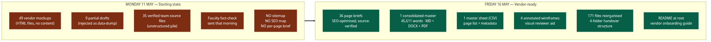
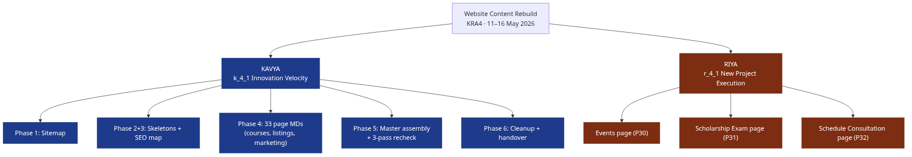

From scratch to vendor-ready handover in 5 working days.
SSEI signed Samadhan to rebuild the website. Samadhan are builders, not writers. Before they can ship a single page, they need a finished page-by-page content brief: what the page says, in what order, with what SEO targets, linking where. That brief did not exist on Monday morning.
The choice was either (a) Samadhan writes guesswork content because no one gave them a brief, and SSEI catches errors in QA at the end — costing 4 to 6 weeks of rework — or (b) Growth & Ops gives them a complete, source-verified, SEO-optimised brief upfront so they build it right the first time.
This work is option (b). It is the spine the new website is being built on.
Content briefs are only as good as the source-of-truth inputs feeding them. Every fact in the master document traces back to a named subject-matter contributor.
| Contributor | What they provided | Used for |
|---|---|---|
| Vidyut | Original master sheet of all course pricing per exam window across CFA, FRM, CA, ACCA, Analyst Stack programmes | Sticky purchase card on every course detail page (29 pages) |
| Chirag | Verified course content (curriculum, hours, faculty, mode, validity, deliverables) for every course except ACCA — 15 SKUs across CFA L1, L2, L3, FRM, CA Final AFM, CA Inter FM, CA Foundation, Analyst Stack, Prudentia | Course detail pages, listings |
| Shubhankar | Verified ACCA programme content across all 7 ACCA SKUs (Knowledge Level, Knowledge + Skills, All 13 Papers, 8 Papers, 7 Papers, 10 Papers, Professional Level) | ACCA programme landing page + route selector |
| Yash | Verified all faculty content: bios, credentials, programme attribution. Confirmed Karan Aggarwal off-list, confirmed Anurag Sharma / Harsh Shah / Pravin Thatte / Nishant Katoch active. | Faculty page + faculty references across every course detail |
| Tiyasha | Supported Riya on the engagement-page content: copy drafts and structural input for the Scholarship Exam and Schedule Consultation pages | Engagement section (P31, P32) |
| Kavya | Designed the skeleton template (slot A–R framework) used across every page. Distributed the framework to Chirag, Shubhankar, Yash, and Riya so their inputs slotted in without re-formatting. Did the SEO research, sitemap, master assembly, 3-pass recheck, and vendor handover. | Process design, page architecture, SEO layer, final QA, 29 page MDs (courses, marketing, listings, blogs) |
| Riya | End-to-end content for 8 pages: Faculty (verified by Yash), Mocks Listing, Mock Detail template, Events, Scholarship Exam (with Tiyasha), Schedule Consultation (with Tiyasha), Careers, Media — including filter specs, calendar layouts, form fields, event detail templates | Faculty + Mocks + Events + Careers + Media + Engagement sections |
The bigger point: nothing in the brief is invented. Every product fact is from a named source. Phrasing and SEO are mine. Facts are theirs.

Vidyut asked how SSEI's content gets written. The honest answer is it is not vibes — it is a repeatable 8-step process. Every page in the master document went through the same pipeline. Here it is, in order.
Start by listing every page that will exist on the website. One row per page, with eight columns: page ID, URL, tier (P0 launch-critical, P1 launch-nice, P2 post-launch), audience (visitor / student / admin), template type, indexability (yes / no for SEO), mockup file reference, source content document.
For this rebuild: 49 mockups from Samadhan, condensed and re-prioritised to 36 indexable pages plus a handful of templates.
Every page is built from the same alphabetical slot grid. Course pages use slots A (Breadcrumb), B (H1 + Badge row), C (Meta row), D (Tabs), E (Overview lead paragraph + What’s Inside list), F (Curriculum), G (Faculty), H (Mocks), I (FAQs 5x), J (Toppers), K (Related Courses 3x), L–R (Sticky Purchase Card with pricing, validity extension, CTA).
Public marketing pages use a variant. Engagement pages a third. The slot pattern stays consistent within each page type.
Search engines rank pages, not websites. So every one of the 35 indexable pages got its own SEO research pass:
Sources for the keyword research: research_findings.md (29K of keyword clusters, competitor SERP intel, search-intent breakdowns), live ssei.co.in product pages, and Google’s autocomplete / People Also Ask scraping.
For the four most-reviewed pages (Homepage, About, Mocks listing, Mock detail), the HTML mockups were annotated with blue floating slot badges — TL-A, TL-B, MD-A, MD-B etc. — so a reviewer can see “this paragraph in the brief fills slot E on the mockup” at a single glance.
Before any content gets written, the source-of-truth docs are collected and verified:
These get extracted (DOCX → markdown via pandoc, PDF → text via pdftotext, XLSX → CSV via libreoffice, PPTX → XML regex) into a structured _extracted/ folder. Every page brief later cites which source file it used.
36 individual page briefs written into per-page markdown files. Each file has SEO frontmatter (title, meta, OG, schema) at the top, then slot-by-slot copy in mockup order. Facts come only from the verified Step 5 sources. SSEI’s voice rules apply throughout:
After the pages are written, a second verification loop catches any factual errors introduced through phrasing. Course detail pages go back to Chirag (or Shubhankar for ACCA) for a spot-check. Pricing tables go back to Vidyut. Faculty bios go back to Faculty Affairs.
This is also where decisions like “remove Karan Aggarwal from all faculty references” (he left SSEI) and “strip FRM Part 2 from combos” (out of scope per directive) get applied across the entire document.
One last sweep across the master document with three independent passes:
That is the content science. 8 steps, 5 working days, repeated for every page. The output is not just words on a wall — it is a vendor-ready spec a third party can build from without further input.
| Day | What got done |
|---|---|
| Mon 11 May (AM) | Built the sitemap. One row per page across all 49 mockups, with URL, tier, audience, template, SEO indexability, source link. |
| Mon 11 May (PM) | Started SEO meta map. Course pages first (highest commercial value). Primary keyword, secondary keywords, meta title/description, OG tags, schema type per indexable page. |
| Tue 12 May | Built per-page skeletons. Every page mapped slot-by-slot (A through R) to its mockup’s visual layout. 4 existing drafts reformatted, 3 data-dumps rewritten, 2 mixed salvaged. |
| Wed–Thu 13–14 May | The actual writing. 29 pages by Kavya (homepage, about, contact, tools, all 8 CFA L1 variants, 3 CFA L2, CFA L3, FRM, 2 CA Final AFM, CA Inter FM, CA Foundation, ACCA, Analyst Stack, Prudentia, course discovery, blogs). 8 pages by Riya: Faculty (verified by Yash), Mocks Listing, Mock Detail template, Events, Scholarship Exam (with Tiyasha), Schedule Consultation (with Tiyasha), Careers, Media. |
| Thu–Fri 14–15 May | Master assembly. Concatenated 37 MDs into one document. Rendered to DOCX + PDF. Built the master sheet (one row per page). Ran the 3-pass recheck. |
| Fri 16 May | Workspace cleanup. Reorganised 171 files into 4 folders. Wrote vendor README. Rendered 37 individual per-page PDFs. Handover-ready. |

13 actions live in the dashboard tracker under KRA4 (a_4_07 through a_4_19). All marked done.
The rubric measures shipping rate of new-project initiatives — how often new 0→1 work goes from idea to delivered output.
For Q1 Year 2 (Apr–Jun 2026), the website rebuild is a complete 0→1 ship:
Riya independently owned 8 pages: Faculty, Mocks Listing, Mock Detail template, Events, Scholarship Exam (with Tiyasha), Schedule Consultation (with Tiyasha), Careers, Media — full SEO frontmatter, filter specs, form specs, event detail templates. The Faculty page was verified end-to-end by Yash. The Scholarship Exam page links to the live initiative that closed 26 Apr; the Schedule Consultation page is the new top-of-funnel flow.
| When | What | Owner |
|---|---|---|
| This coming week | Meeting with Yash and Anjul to lock add-ons to the website. Design and content to be frozen by the end of this week. | Kavya + Yash + Anjul |
| Now → 4 weeks | Samadhan builds the live website from the handover | Samadhan + Tech |
| Parallel | Faculty fact-check V4 for any late corrections | Faculty / Kavya |
| Pre-launch | QA pass on staging | Growth & Ops + Tech |
| Launch | Hard launch with SEO redirects from old URLs | Tech |
| Post-launch | Indexation monitoring + organic traffic baseline | Growth & Ops |